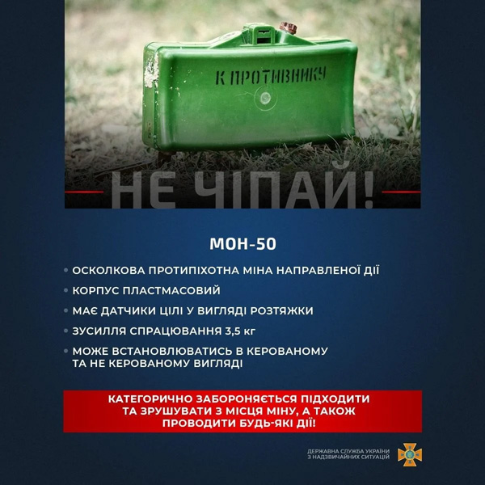
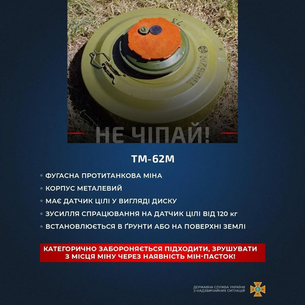
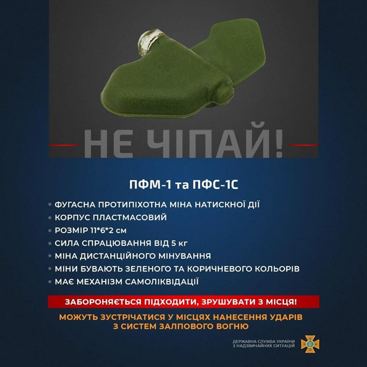
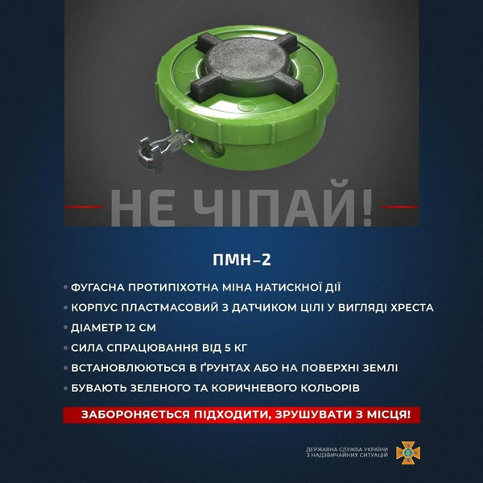
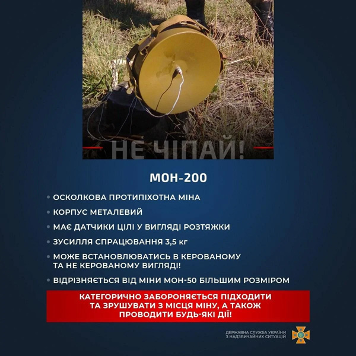
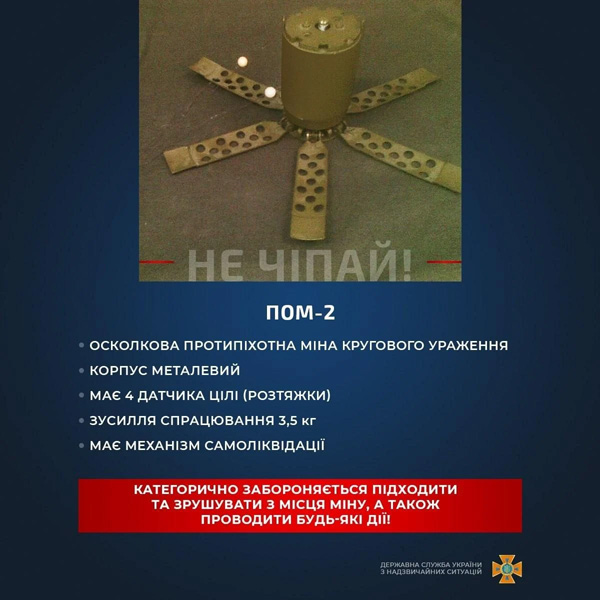
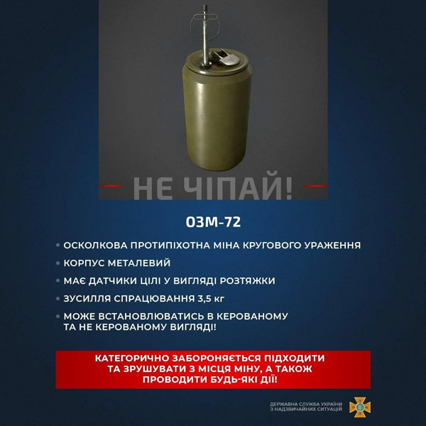

|  |
МОН-50
- Осколкова протипіхотна міна направленої дії
- Корпус пластмасовий
- Має датчики цілі у вигляді розтяжки
- Зусилля спрацювання 3,5 кг
- Може встановлюватися в керованому та не керованому вигляді
|
|  |
ТМ-62М
- Фугасна протитанкова міна
- Корпус металевий
- Має датчик спрацювання у вигляді диску
- Зусилля спрацювання на датчик цілі від 120 кг
- Встановлюється в ґрунті або на поверхні землі
|
|  |
ПФМ-1-1 та ПФС-1С
- Фугасна протипіхотна міна натискної дії
- Корпус пластмасовий
- Розмір 11 на 6 на 2 см
- Сила спрацювання від 5 кг
- Міна дистанційного мінування
- Міни бувають зеленого та коричневого кольорів
- Має механізм самоліквідації
- Можуть зустрічатися у місцях завдання ударів з систем залпового вогню
|
|  |
ПМН-2
- Фугасна протитанкова міна натискної дії
- Корпус пластмасовий з датчиком цілі у вигляді хреста
- Діаметр 12 см
- Сила спрацювання від 5 кг
- Встановлюються в ґрунтах або на поверхні землі
- Бувають зеленого та коричневого кольорів
|
|  |
МОН-200
- Осколкова протипіхотна міна
- Корпус металевий
- Має датчики цілі у вигляді розтяжки
- Зусилля спрацювання 3,5 кг
- Може встановлюватись в керованому та не керованому вигляді
- Відрізняється від міни МОН-50 більшим розміром
|
|  |
ПОМ-2
- Осколкова протипіхотна міна кругового ураження
- Корпус металевий
- Має 4 датчики цілі (розтяжки)
- Зусилля спрацювання 3,5 кг
- Має механізм самоліквідації
|
|  |
ОЗМ-72
- Осколкова протипіхотна міна кругового ураження
- Корпус металевий
- Має датчики цілі у вигляді розтяжки
- Зусилля спрацювання 3,5 кг
- Може встановлюватися в керованому та не керованому вигляді
|
Не наближайтеся до мін та боєприпасів!
Повідомляйте про такі знахідки рятувальників або поліцію!
Розкажіть про це дітям!
За матеріалами: ДСНС України
https://goo.su/lnridIg target="_blank", https://goo.su/mEhzdo